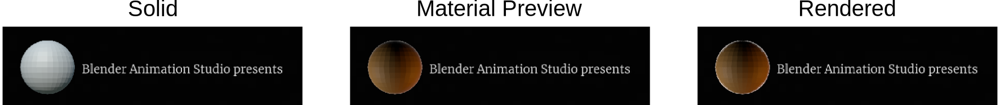

1.2.3. Sidebar¶
Preview の Sidebarは、[View]メニュー > [Sidebar] または ショートカット shortcut N を使用して切り替えることができます。 [Tool]、[View]、または [Metadata] の 3 つのタブのいずれかを選択できます。図1 は、Preview のSidebarだけでなく、Sequencerの Sidebarも示しています。PreviewのSidebarで、[View] タブがアクティブになり、すべてのパネルが展開されます。Safe領域が有効になっており、Annotaiomも追加されています。
図1: Video Sequence Editor の Preview と Sequencer用 Sidebar¶
Reference
Name: |
View Settings |
Context: |
Video Sequence Editor > Preview |
Location: |
Sidebar > View |
{kind=link}
- Proxy Render Size
プロキシの使用方法については、Setup セクションで詳しく説明します。フレームのプリフェッチについては、キャッシュに関するセクションで説明します。
- Channel
Sequencer には複数のチャンネルを含めることができます。図 1 には、ストリップのある 3 つのチャネルがあります。チャネル 1 にサウンド ストリップ、チャネル 2 にムービー ストリップ、チャネル 3 にシーン ストリップがあります。Preview に表示されるチャネルがここに示されています。指定されたチャンネルの上のストリップをミュートしても同様の結果が得られます。チャンネル 0 (デフォルト設定) はすべてのストリップの合成結果であり、デフォルトで表示されます。
注釈
このオプションは、ある種の「分離モード」として解釈されるべきではありません。指定されたチャネルは、そのチャネルのみが表示されるという意味では分離されていません。各チャネルは、下のチャネルの上に暗黙的に合成されます。より適切な説明は、「チャンネルを見えるようにする」かもしれません。
- Show Overexposed
白とび（明るい）部分をゼブラパターンで表示します。領域が露出過度になるのはどのような場合ですか? スライダーで閾値を設定できます。値 0 ～ 110 は、10 進数値 (0 ～ 1.1) のパーセンテージとして解釈されます。ピクセルの RGB値 (任意のコンポーネント) が指定されたしきい値以上である場合、そのピクセルは露出オーバーとしてマーク (ゼブラストライプ) されます。これはカラーストリップで簡単に確認できます。たとえば、色を明るい黄色に設定します (RGB = 0.9、0.9、0)。しきい値を 90 に設定すると、すべてがゼブラストライプになります (おそらく露出オーバーになります)。しきい値 91 以降、プレビューには再び明るい黄色が表示されます。しきい値を 0 にすると、このフィルターが無効になります。
注釈
次のOverlay (Frame Overlay, Safe Area, Annotations, および Metadata) は、[Show Overlay] ボタン (Previewウィンドウの右上) を使用して表示できます。
Reference
Name: |
Frame Overlay |
Context: |
Video Sequence Editor > Preview |
Location: |
Sidebar > View |
{kind=link}
このフレーム オーバーレイ設定を有効にすると、現在のフレームを参照フレームと比較できます。これは、カラーグレーディングなどに非常に便利です。2枚のショットを画面上でプレビュー表示できるので、2枚のショットの色を合わせやすくなります。また、異なるカメラから同じシーンのショットがあるマルチカム編集の場合、両方のカメラを同時にプレビューできると便利です。
ただし、このオプションのユーザー インターフェイスは少し時代遅れです。
図4: Frame Overlay Type: Reference (left), Current (mid), Rectangle (right)¶
- Set Overlay region
最初にフレーム オフセット (以下を参照) を設定する必要があります。それ以外の場合は、多くのことが起こっていることを確認したいと思います。[Set Overlay region] ボタンを押すと、Preview内でオーバーレイを表示する場所にボックスを描画できます。ショートカットは O です。図4 では、オーバーレイ領域が Preview の左側に描画されます。
ただし、このOverlay Type (Rectangle) はあまり役に立ちません。Reference フレームの 中間領域を確認したいとします。その場合、 現在のフレームの中央領域にボックスを描画して、おそらく重要な情報を隠す必要があります。上部に描画すると邪魔にならないように移動しますが、Reference フレームからあまり興味のない領域 (上部) も表示される可能性があります。
- Frame Offset
このスライダーは、Current のフレームに対する Refrence フレームのオフセットを制御します。図4 では、Current フレームは位置 7650、Referenceフレームは位置 6650 (青い破線) にあり、これは Current フレームから -1000 フレームのオフセットです。[Frame Offset]を変更しても、Previewウィンドウはリアルタイムでは更新されません。この変更の結果を確認するには、Playheadを移動する必要があります。
- Overlay Type
- Rectangle
参照フレームの長方形領域が、現在のフレームの上の同じ位置に表示されます。これは、図4 (右側) で使用されているケースです。
- Reference
プレビュー領域にはReferenceフレームのみが表示されます (図4 の左側を参照)。もちろん、これは Current フレームを移動し、[Frame Overlay]をオフにすることとまったく同じです。
- Current
Current フレームのみがPreview領域に表示されます (図4 中央)。もちろん、これはPreviewのデフォルトの動作です。
Tip
最後の 2 つのオプションは、2 つのPreviewウィンドウを使用する場合にのみ役立ちます。複数のVSE(Video Sequence Editor) を同時に開くことができ、異なる[Overlay Type]を使用できます。したがって、中央のVSEには Current フレームが表示され、左側のVSEには Reference フレームが表示されます。
- Overlay Lock
Reference フレームは Current フレームに同期して移動します。このオプションを使用すると、Reference フレームを現在の位置に（一時的に）ロックできます。
Reference
Name: |
Safe Areas |
Context: |
Video Sequence Editor > Preview |
Location: |
Sidebar > View |
{kind=link}
[Safe Areas]とは、ほとんどのデバイスで表示される画面領域です。特に、角が丸い古いテレビでは、表示される領域が非常に小さくなります。この[Safe Areas]は、Blender では点線で示され (図6 を参照)、 European Broadcasting Union (EBU) の規則に準拠しています。次の 2 つの領域があります。
図6: Safe Areas¶
- Title Safe Margins X & Y
EBU ドキュメント (このオプションは「グラフィックス セーフ エリア」と呼ばれています) によると、これはデフォルトでプロジェクト解像度の 5% に設定されています。字幕やロゴなどのすべてのテキストおよびグラフィック要素は、この領域内に配置する必要があります。
- Action Safe Margins X & Y
すべての主要なアクションはこの領域内で表示できる必要があります。デフォルトでは、アクション セーフ マージンはプロジェクト解像度の 3.5% に設定されています。一部のテキスト (またはロゴ) を失うことは、一部のアクションをカットするよりも有害であるため、アクション セーフ マージンはタイトル セーフ マージンよりも小さくなります。
- Center-Cut Safe Areas
これにより、古い 4×3 テレビやモニターをまだ持っている人でも、側面のテキストが切れることがなくなります。デフォルトでは、これは X プロジェクト解像度の 17.5%、Y 軸の 5% に設定されています。もちろん、これらの値はアスペクト比 16:9 のプロジェクトのものです。16:9 の画像を 4:3 領域に表示する場合、2 つの可能性があります (図7 を参照)。
図7: How to fit a 16:9 image in a 4:3 area?¶
図7 の左側のソリューションでは、完全な 16:9 画像が保存されていますが、2 つの黒い長方形の領域 (レターボックスと呼ばれます) が上部と下部に追加されています。4:3 領域をフッテージで完全に埋めたい場合は、図 6 の右側にある解決策が必要です。元の 16:9 画像は左右とも 12.5% トリミングされます。タイトル セーフ エリアにさらに 5% を追加すると、デフォルトの 17.5% になります。
注釈
最新のテレビやコンピュータのモニターは固定ピクセル マトリックス画面を備えており、表示可能な領域は古い CRT (陰極線管) 画面よりもはるかに大きくなります。したがって、Safe Areas はもはやそれほど重要ではありません。ただし、ユーザーは Safe Areas のレイアウトに慣れています。したがって、Safe Areasのガイドに従うことをお勧めします。また、美観の観点から、画面の端にテキストやロゴを貼り付けることはお勧めできません。
Reference
Name: |
Scene Strip Display |
Context: |
Video Sequence Editor > Preview |
Location: |
Sidebar > View |
{kind=link}
このオプションを使用すると、シーン ストリップの画像が Preview にどのように表示されるかを制御できます。図1 では、シーンストリップが追加され、イントロ テキストの左側にオレンジ色の円が表示されます。このオレンジ色の円は、別のシーンの 3D ビューで作成されました。Sequencerの同じシーンを使用することはできません。この円は、オレンジ色の発光マテリアルを適用したシンプルなメッシュです。
- Shading
シェーディングとは、プレビューでオブジェクトが描画および照明される方法を指します。詳細については、Viewport Shading を参照してください。
Solid: シーン ストリップのオブジェクトをmassiveオブジェクトとして表示しますが、マテリアルは割り当てられていません。稲妻、色、その他のオプションは、ワークベンチ レンダリング エンジン ([Properties] > [Render]タブ > [Render Engine]) で設定できます。
Wireframe: 機能しないようです!
Material Preview: シーン自体で選択されたレンダリング エンジンとは関係なく、Eevee レンダリング エンジンを使用してシーン ストリップをレンダリングします。
Rendered: 選択したシーン レンダリング エンジン (Cycles、Eevee、Workbench) を使用してシーン ストリップをレンダリングします。デフォルトでは、シーン ライトが照明に使用されます。
図9: Scene Strip Display (Solid, Material Preview, Rendered); 図1も参照.¶
レンダリング ビューのイメージは、Cycles に設定されたソース シーンのレンダリング エンジンを使用してレンダリングされるため、若干異なることに注意してください。
- Override Scene Settings
このオプションは、ソリッド シェーディングがアクティブ化されている場合にのみ使用できます。有効にすると、ソース シーンの Workbench レンダリング設定ではなく、Sequencer のシーンの Workbench レンダリング設定が使用されます。これらの設定は、 [Properties] > [Render]タブ > [Render Engine] にあります。
Reference
Name: |
Annotations |
Context: |
Video Sequence Editor > Preview |
Location: |
Sidebar > View |
{kind=link}
- Annotations
このパネルを使用すると、プレビューで作成された注釈の外観を変更できます。詳細については、 User Interface section セクションを参照してください。注釈ツール (3D ビューポート内) の使用方法は、3DGreenhorn によるチュートリアルで詳しく説明されています。
注釈を作成するには、Toolbar (ショートカットキー D) で注釈ツールを選択し、描画を開始する必要があります。新しいデータ ブロックが作成され、サイド バーの [Annotations] パネルに表示されます (図10 "Annotations"と呼ばれます)。 [New] ボタンを使用して、複数のデータ ブロック (例: Annotations.001、Annotations.002 など) を作成できます。 (図10 を参照) またはヘッダーの左側にあるドロップダウンを使用して別のデータ ブロックに変更します。プレビューに新しく追加されたすべての注釈は、選択したデータ ブロック内に保存されます。表示できるのは1 つのデータの注釈のみです。注釈データ ブロックを削除するには、[Unlink] ボタンをクリックします。ただし、そのデータ ブロックは一度に削除されず (ドロップダウンで復元できるため)、Blend ファイルが保存されるときに削除されます。 ([Fake User] ボタンが有効になっていない限り)。
データ ブロック 内には複数のレイヤーが存在する場合があります。デフォルトのレイヤー名は「note」です。[Add New Annotation Layer] ボタン (+) を使用して、複数のレイヤー (note.001 など) を作成できます。たとえば、別の色を使用したい場合などです。レイヤーを削除するには、(-) をクリックします。プレビューでレイヤーを非表示にするには、「Hide」ボタン (eyeマーク) をクリックします。1 つのレイヤーに複数の注釈を含めることができます。これらは、Preview で同じフレームまたは異なるフレームで描画できます。注釈の色は、カラーピッカー (Noteの左側) を使用してレイヤーごとに設定します。また、不透明度と太さはレイヤーごとに設定されます。
プレビューに描画された注釈は、描画されたフレームで表示され、注釈が含まれる次のフレームまで表示されたままになります。したがって、2 つの連続したアノテーションがある場合 (フレーム 10 と 11 など)。最初の注釈は 1 つのフレーム (フレーム 10 など) でのみ表示されますが、2 番目の注釈は表示されたままになります (フレーム 11 から…)。[Lock Current Frame] ボタンを使用すると、前後の注釈に関係なく、その特定のフレームの注釈をフリーズします。
- Onion Skinning
[Onion Skinning] を使用すると、現在のフレームの前後の注釈を表示できます。これらは、いくつかのフレーム (前後) で選択した色で表示されます。Before と After の値をゼロに設定すると、現在のフレームの 1 フレーム前と 1 フレーム後の注釈が表示されます。より大きな数値に設定すると、前後に長い時間表示されます。これらの値を -1 に設定すると、その方向のオニオン スキニングが無効になります。
図11: VSE の Onion Skinning¶
- Metadata
ムービーまたはイメージ ストリップには、実際の画像に加えて、ファイル名、作成日、カメラ モデルなどのメタデータを含めることができます。このメタデータの一部はプレビューに表示できます ([Show Overlay] ボタンを参照)。ただし、表示されるメタデータは、シーケンサー内のアクティブな (選択された) ストリップではなく、再生ヘッドの下のストリップからのものです。
Blender 出力レンダリングからのメタデータは、適切なフィールド (カメラ、時間など) に保存されます。 Rendered Output を参照してください。Gimp などの一部のグラフィック プログラムも一部のメタデータを保存します。ただし、ヘッダー フィールド「コメント」に保存されているテキストのみが表示されます。プレビューに表示され、メタデータ パネルに表示されます。この値は Blender 内から編集することはできません。そのためには、exiftool などの外部プログラムが必要です。
「コメント」フィールドを変更するコマンドは次のとおりです。
exiftool --comments="My new comment" name-of-file.png
注釈
メタデータは、エフェクトによって処理されていない画像に対してのみ表示されます。たとえば、エフェクト ストリップ (グローなど) を追加すると、メタデータが表示されなくなります。もちろん、メタデータはファイルから削除されません。エフェクト ストリップを非表示にすると、再び表示されます。